← Index · ← Previous · Next →
Authors: Darmindra Arumugam
Type: experiment · Category: other · PDF: https://arxiv.org/pdf/2605.08535v1
Analysis basis: full PDF text, analyzed in chunks
Topic relevance: quantum optics experiment 3/5 · quantum measurements 2/5
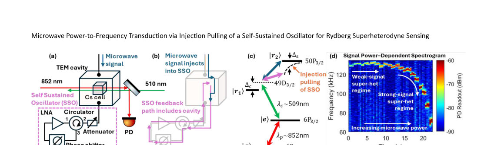
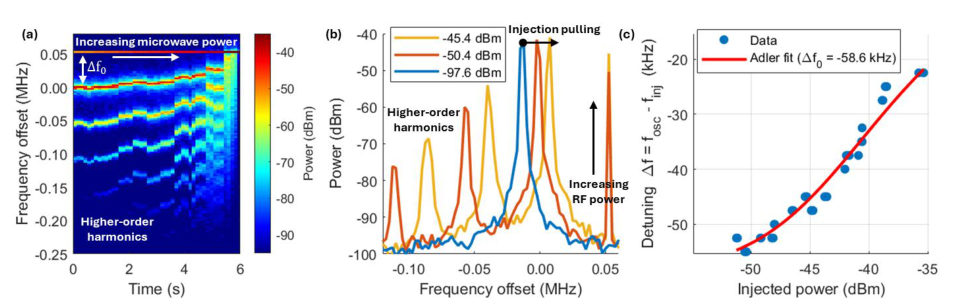
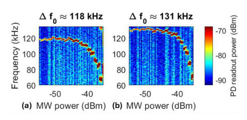
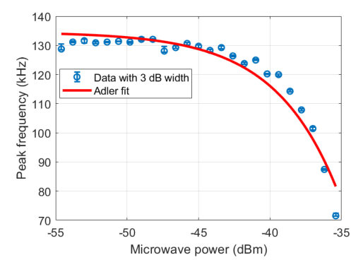
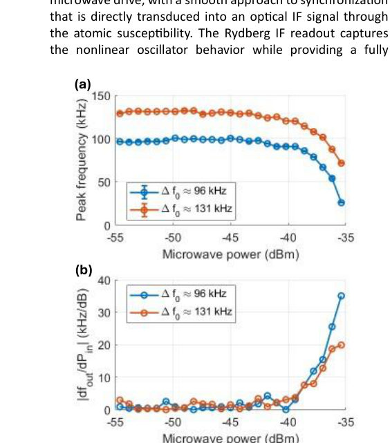
Summary. This paper presents a new method for microwave sensing that converts input power into a measurable frequency shift using a self-sustained oscillator and Rydberg atoms. By utilizing the nonlinear dynamics of injection pulling, the system achieves high transduction gain. This approach allows for the optical readout of microwave signals through atomic susceptibility.
Why it may be interesting. This work demonstrates a novel way to use nonlinear classical dynamics (injection pulling) coupled to Rydberg atoms to create a highly sensitive, all-optical transducer for RF signals, which is relevant for quantum sensing and precision spectroscopy.
Main problem. The challenge of detecting weak microwave/RF signals is often limited by noise and the stability of external local oscillators in conventional receivers.
Main result. The authors demonstrated a power-to-frequency transduction mechanism where microwave power is converted into a measurable frequency shift via injection pulling, achieving a peak responsivity of 35 kHz/dB.
Method. A microwave signal is injected into a self-sustained oscillator (SSO) coupled to a Cesium Rydberg vapor cell, and the resulting frequency shift is read out optically via probe beam transmission.
Model / system. A hybrid classical-atomic architecture consisting of a radio-frequency feedback loop containing a TEM cavity with a room-temperature Cesium vapor cell, utilizing a ladder-type Rydberg excitation scheme (6S to 6P to 49D).
Key observables. The optical intermediate-frequency (IF) signal, frequency detuning (delta f), and frequency responsivity (|df_out/dP_in|).
Important parameters / regimes. Operating frequency (~5.49 GHz), initial frequency detuning (delta f_0), injected microwave power (P_inj), and the synchronization threshold.
Assumptions / limitations. The system's frequency dynamics follow Adler-type injection-pulling behavior.
Figures summary. Fig 1 shows the system schematic, RF feedback architecture, and Rydberg excitation scheme. Fig 2 displays SSO characterization including spectrograms and detuning vs. power. Fig 3 shows Rydberg probe spectrograms. Fig 5 illustrates the monotonic frequency shift and the nonlinear increase in responsivity near the locking threshold.
Paper structure. The paper introduces the sensing problem, describes the hybrid SSO-Rydberg experimental platform, details the injection-pulling mechanism and Adler-type dynamics, presents experimental results for frequency shifts and responsivity, and concludes with future directions for bandwidth extension.
A Rydberg superheterodyne sensing architecture is demonstrated in which a self-sustained oscillator (SSO) serves as a dynamically perturbed local oscillator (LO) for microwave detection. The SSO is realized by a phase-controlled radio-frequency (RF) feedback loop coupled to a transverse electromagnetic (TEM) cavity containing a Rydberg vapor cell. The system operates near 5.49 GHz using a cesium ladder scheme with an 852 nm probe and 510 nm coupling laser addressing the 6S to 6P to 49D transition, with microwave coupling to the 50P state. Injection of a microwave signal pulls the SSO frequency via nonlinear dynamics, converting input power into a measurable frequency shift read out optically as a Rydberg probe intermediate-frequency (IF) signal. The response follows Adler-type injection-pulling behavior, with continuous IF tuning with input power. A peak responsivity of 35 kHz/dB is observed, with enhanced sensitivity near synchronization. These results demonstrate power-to-frequency transduction using a dynamically perturbed LO combined with Rydberg atomic readout.
Authors: Ying-Jen Yang, Ken A. Dill
Type: theory · Category: statistical mechanics · PDF: https://arxiv.org/pdf/2605.09105v1
Analysis basis: abstract only; PDF text extraction failed or PDF unavailable
Topic relevance: non-equilibrium dynamics 3/5 · methods for driven-dissipative 2/5
Summary. The paper introduces 'CFT Design,' a new theoretical framework based on Caliber Force Theory for optimizing nonequilibrium networks. It moves beyond simple entropy production to address complex design challenges like cost-benefit tradeoffs in molecular motors and enzymes. This provides a general toolkit for engineering efficient biological and synthetic molecular machines.
Why it may be interesting. This is relevant for researchers in open quantum systems and many-body dynamics as it provides a new theoretical framework for optimizing non-equilibrium steady states and controlling dissipation-driven flows in networked systems.
Main problem. Traditional Master Equation approaches to biomolecular networks fail to account for cost-benefit tradeoffs, small-system misflows, and differential properties necessary for design and optimization.
Main result. The development of CFT Design, a framework based on Caliber Force Theory (CFT), which enables the optimization of nonequilibrium flow networks.
Method. The authors utilize Caliber Force Theory (CFT) to create a design framework that addresses efficiency, speed, and accuracy in molecular processes.
Model / system. The framework is applied to nonequilibrium flow networks, specifically including molecular motors, kinetic proofreaders, and enzyme inhibition pathways.
Key observables. Node populations, edge fluxes, entropy production, speed, energy, and accuracy.
Important parameters / regimes. Cost-benefit tradeoffs, backsteps, futile cycles, and ineffective actions.
Paper structure. The paper introduces the limitations of current Master Equation models, presents the new CFT Design framework, and demonstrates its utility through applications to molecular motors, kinetic proofreading, and enzyme inhibitors.
Modeling the dynamical flows on networks of biomolecular machines often entails computing node populations and edge fluxes with Master Equations and correlating machine performance with entropy production. But this alone is not sufficient for design, optimization and evolution because it doesn't treat cost-benefit tradeoffs, or small-system misflows (backsteps, futile cycles, ineffective actions), or differential properties for flow design. Here we develop CFT Design, based on the recently developed Caliber Force Theory (CFT). We apply it to: designing faster molecular motors through ``traffic control''; optimizing speed, energy, and accuracy in kinetic proofreaders; and designing better enzyme inhibitors. CFT Design provides a general framework for optimizing nonequilibrium flow networks.
Authors: Sunita Meena, Sugar Singh Meena, Paulo A Brandão, Amit Rai
Type: theory · Category: quantum information and computing · PDF: https://arxiv.org/pdf/2605.09819v1
Analysis basis: full PDF text, analyzed in chunks
Topic relevance: interference shaping light 3/5 · entanglement & information structure 2/5
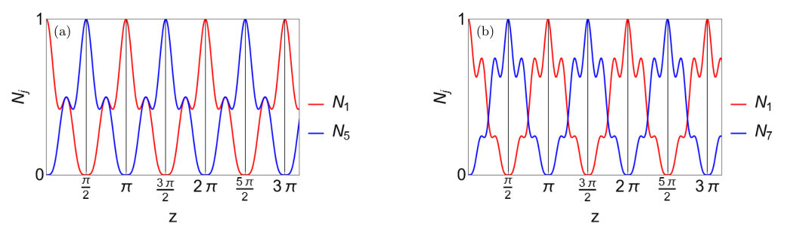
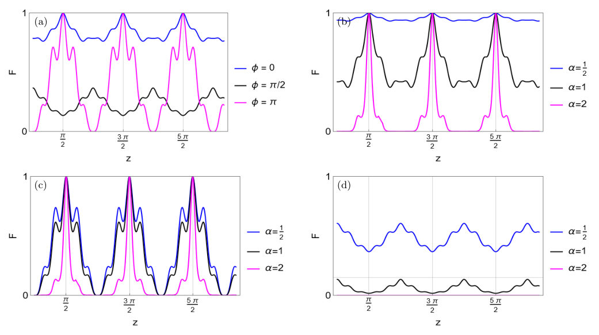
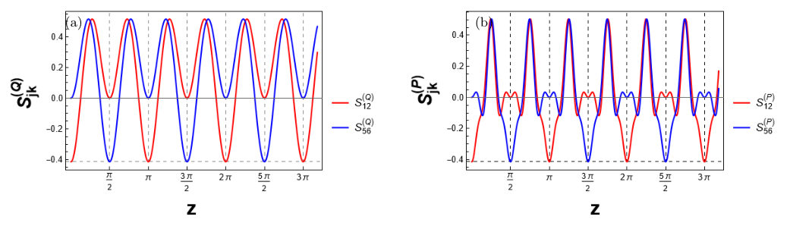
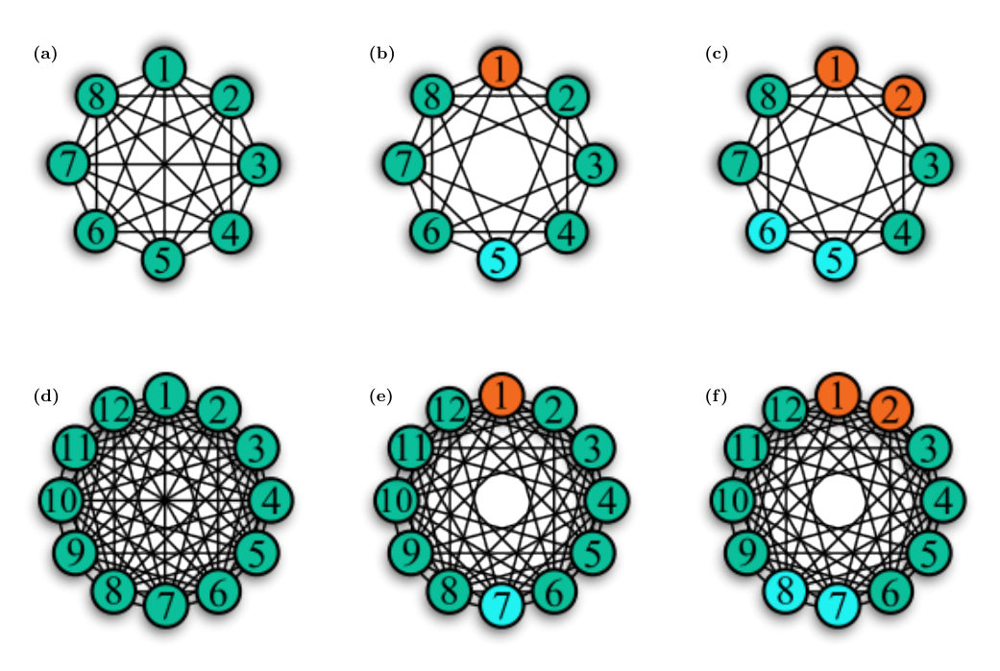
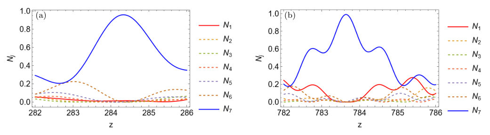
Summary. The paper proposes a method for achieving perfect state transfer in circular photonic networks by engineering long-range couplings that cause the energy spectrum to collapse into three blocks. This approach enables efficient quantum routing that is independent of the number of waveguides for specific network sizes. The scheme is shown to be effective for transferring both single photons and complex continuous-variable states like Schrödinger cat states.
Why it may be interesting. It provides a scalable mechanism for quantum routing in integrated circuits by utilizing global spectral interference rather than local coupling, which is highly relevant for designing robust quantum communication protocols and photonic quantum computing architectures.
Main problem. Achieving high-fidelity, scalable Perfect State Transfer (PST) in quantum photonic networks, specifically overcoming the limitations of increasing network size and propagation distance in circular waveguide arrays.
Main result. The authors identify that a 'spectral collapse' into three distinct eigenvalue blocks, enabled by uniform long-range couplings, allows for PST to the antipodal site for any network size N=4n. This mechanism is shown to be robust for both discrete-variable (single photons) and continuous-variable (Schrödinger cat and TMSV) quantum states.
Method. The study uses an analytical approach involving discrete Fourier transforms to diagonalize the circulant coupling matrix and investigate the eigenvalue spectrum. Numerical simulations validate the fidelity of state transfer for various quantum states and evaluate the impact of evanescent coupling.
Model / system. A quantum photonic network consisting of N identical optical waveguides in a circular (ring) geometry, modeled by a tight-binding Hamiltonian with long-range interactions between waveguides.
Key observables. Photon number in modes, state fidelity (F), quadrature squeezing (Q and P), and EPR-variable correlations.
Important parameters / regimes. Network size N=4n, interaction range R, coupling strength C, displacement parameter alpha, and the coupling decay parameter mu.
Assumptions / limitations. The primary mechanism relies on the ideal case of uniform long-range couplings; the study also assumes a large detuning regime when discussing the engineering of couplings via auxiliary modes.
Figures summary. Figures demonstrate photon number dynamics for different N, the comparison of supermode spectra under different coupling profiles (nearest-neighbor vs. structured), and the variation of state transfer fidelity with respect to the phase of cat states.
Paper structure. The paper introduces the problem of QST in circular networks, presents the analytical derivation of the spectral collapse and PST conditions using Fourier modes, investigates the transfer of DV and CV states, discusses the impact of realistic evanescent coupling, and proposes a method for engineering the required coupling profile using auxiliary modes.
We propose a quantum network consisting of optical waveguides in the linear regime for quantum state transfer. The circular topology of our network introduces novel functionalities that enable us to analytically identify the conditions under which perfect state transfer (PST) is achievable. We utilize the properties of the Fourier modes, in particular the zero Fourier modes, which provide a protected subspace for the efficient propagation of quantum states, resulting in PST to the diametrically opposite site in a network with any number of sites $N = 4n$. The coupling profiles in the photonic network modulate the number of zero-energy eigenmodes, with uniform couplings yielding more than evanescent ones, confirming that the expedition of observed PST originates from the collapse of the eigenvalue spectrum into three distinct eigenvalue blocks, including $N/2$ manifolds of zero Fourier modes. We investigate PST in both discrete- and continuous-variable input regimes, using single photon state, Schrödinger cat states, and two-mode squeezed vacuum state. Our findings apply to the engineering of quantum networks and photonic lattices, paving the way for applications in controlled routing in integrated quantum circuits.
Authors: Yinan Chen, Zongyuan Wang, Sisi Zhou
Type: theory · Category: quantum information and computing · PDF: https://arxiv.org/pdf/2605.08341v1
Analysis basis: abstract only; PDF text extraction failed or PDF unavailable
Topic relevance: quantum measurements 3/5 · correlated / nonlocal dissipation 2/5
Summary. The paper proposes a new method for quantum metrology that uses only partial quantum error correction to suppress local noise. By encoding probe states in specific energy superpositions, the authors show that a subset of error correction checks is sufficient to maintain high-precision sensing. This approach avoids the need for complex, non-local connectivity and full stabilizer measurements.
Why it may be interesting. This is highly relevant for open quantum systems and quantum optics as it provides a more scalable and practical framework for protecting quantum sensors from local decoherence using local operations.
Main problem. How to achieve error-corrected quantum metrology without the need for full quantum error correction (QEC) measurements on all stabilizers, which can be resource-intensive.
Main result. The authors demonstrate that using only a subset of QEC checks can effectively suppress local noise and maintain super-standard-quantum-limit (super-SQL) sensing performance.
Method. The method involves encoding probe states into superpositions of energetically different states of a quantum code and applying partial error correction using a subset of checks.
Model / system. The system consists of a quantum code where probe states are encoded into superpositions of states with different energies, subject to local noise and phase imprinting via local operators.
Key observables. Noise suppression scaling (p^delta) and sensing performance relative to the standard quantum limit.
Important parameters / regimes. Noise strength (p), operator weight (l), and the suppression exponent (delta = floor((l+1)/2)).
Assumptions / limitations. The noise is local and the phase imprinter and error correction checks are chosen as local operators to avoid non-local connectivity.
Paper structure. The paper introduces the partial QEC method, contrasts it with existing full-QEC schemes, analyzes the noise suppression tradeoff, proposes an adaptive strategy for scaling, and demonstrates the use of local operators.
We introduce a new method for error-corrected quantum metrology where only partial quantum error correction (QEC) is needed to suppress local noise and maintain the probe states' super-standard-quantum-limit (super-SQL) sensing performance. This stands in contrast to the existing QEC-assisted sensing schemes in Phys. Rev. Lett. 112, 080801 (2014) and Phys. Rev. Lett. 112, 150802 (2014), where a probe state is encoded into the logical subspace of a quantum code and error correction involves measurements on all checks of the code. Here, we encode the probe states into superpositions of energetically different states of the underlying quantum code. For our probe states, error correction using a subset of checks is enough to suppress noise both before and after phase imprinting. We analyze the tradeoff in noise suppression. For noise parallel to our phase imprinter of operator weight $l$, we achieve a suppression of $p^δ$, where $p$ is the noise strength and $δ= \lfloor (l+1)/2 \rfloor$. We propose an adaptive imprinter-weight-increasing strategy to maintain super-SQL performance as we scale up the system. In all our examples, checks and phase imprinters are chosen to be local operators, avoiding non-local connectivity.
Authors: John Strahan, Todd R. Gingrich
Type: theory · Category: statistical mechanics · PDF: https://arxiv.org/pdf/2605.09148v1
Analysis basis: abstract only; PDF text extraction failed or PDF unavailable
Topic relevance: methods for driven-dissipative 3/5 · non-equilibrium dynamics 2/5
Summary. The paper presents a new method for calculating how dynamical properties of complex systems change with respect to their parameters, even when those properties are driven by rare events. By combining importance sampling with Markov state models, the authors provide an efficient way to optimize nonequilibrium systems like molecular motors. This overcomes the high computational cost typically associated with direct simulations of rare-event dynamics.
Why it may be interesting. This is highly relevant for researchers in open quantum systems and many-body dynamics, as it provides a scalable way to perform parameter optimization and sensitivity analysis in systems where rare transitions (like quantum tunneling or thermal activation) govern the long-term dynamics.
Main problem. Estimating sensitivities (derivatives of dynamical observables) in complex nonequilibrium systems where dynamics are dominated by rare events.
Main result. A practical computational pipeline that efficiently estimates sensitivities by combining importance sampling with Markov state models (MSM) and an iterative reweighting procedure.
Method. The method integrates importance sampling with a Markov state model (MSM) to separate slow rare-event dynamics from fast local dynamics, utilizing the chain rule and the RiteWeight algorithm for error reduction.
Model / system. The approach is validated on diffusion in the Müller-Brown potential and applied to a particle-based model of a catalysis-driven molecular motor.
Key observables. Dynamical observables and their sensitivities (derivatives with respect to design parameters), specifically transition rates and directional bias.
Important parameters / regimes. Design parameters of the molecular motor and landscape parameters of the Müller-Brown potential.
Assumptions / limitations. The method assumes that the dynamics can be effectively captured by a Markov state model through coarse-graining.
Paper structure. The paper introduces the problem of sensitivity estimation in rare-event dynamics, presents a new computational pipeline combining importance sampling and MSMs, validates the method using the Müller-Brown potential, and demonstrates its utility in optimizing a molecular motor model.
Molecular motors and other complex nonequilibrium systems are controlled by large sets of design parameters, and optimizing those parameters requires computing sensitivities -- derivatives of dynamical observables with respect to the parameters. When the system's dynamics involves rare events, both the observable and its sensitivity are difficult to estimate from direct simulation. We present a practical computational pipeline that addresses both challenges by combining importance sampling with a Markov state model (MSM). The MSM separately captures the slow, rare-event dynamics and the fast, local dynamics, and the chain rule connects those two pieces to yield an efficient sensitivity estimator. An iterative reweighting procedure based on the RiteWeight algorithm substantially reduces approximation errors from the MSM coarse-graining. We validate the approach on diffusion in the Müller-Brown potential, where the sensitivity of a transition rate to landscape parameters can be computed exactly. We then use sensitivies to optimize the directional bias of a particle-based model of a catalysis-driven molecular motor.
Authors: Leandro Hayato Ymai, Karin Wittmann Wilsmann, Joel Bacellar Neves, Arlei Prestes Tonel, Jon Links, Angela Foerster
Type: theory · Category: quantum gases · PDF: https://arxiv.org/pdf/2605.09709v1
Analysis basis: abstract only; PDF text extraction failed or PDF unavailable
Topic relevance: quantum measurements 3/5 · analog quantum simulation 2/5
Summary. The researchers propose a new type of rotation sensor using ultracold dipolar atoms in a four-well trap. By exploiting superintegrability, the sensor can measure rotation using simple population imbalance and achieve sensitivity exceeding the Heisenberg limit. This provides a new pathway for advancing high-precision quantum sensing technologies.
Why it may be interesting. It demonstrates how the mathematical property of superintegrability can be leveraged to enhance quantum sensing precision beyond standard limits in ultracold atom systems.
Main problem. Developing a rotation sensor that can achieve high sensitivity for rotation detection.
Main result. The proposed protocol achieves rotation-detection sensitivity that surpasses the Heisenberg limit.
Method. The study utilizes the property of superintegrability and a simple population imbalance measurement to quantify rotation.
Model / system. The system consists of ultra-cold dipolar atoms trapped in a four-well configuration.
Key observables. population imbalance measurement
Paper structure. The paper proposes a sensor design, describes the measurement protocol based on population imbalance, and demonstrates the achievement of sensitivity beyond the Heisenberg limit.
Detection based on quantum principles such as entanglement has the capacity to achieve finessed levels of sensitivity, bringing transformative impacts to applications. In this study, we propose a rotation sensor using ultra-cold dipolar atoms trapped in a four-well configuration. The design, based on a simple population imbalance measurement to quantify rotation, profits from the property of superintegrability. The implementation of the measurement protocol achieves rotation-detection sensitivity beyond the Heisenberg limit. Our results spotlight superintegrability opportunities for advancing the field of quantum sensing.
Authors: Pawel Caban, Pawel Horodecki
Type: theory · Category: quantum information and computing · PDF: https://arxiv.org/pdf/2605.09474v1
Analysis basis: abstract only; PDF text extraction failed or PDF unavailable
Topic relevance: entanglement & information structure 3/5 · quantum measurements 2/5
Summary. This paper provides the mathematical conditions required to violate the Clauser-Horne inequality in a 2x3 dimensional quantum system. It reveals that local parameters are essential for detecting non-locality, as the correlation component alone may fail to show violations for certain mixed states.
Why it may be interesting. This is relevant for quantum information theorists working on Bell tests and entanglement verification in high-dimensional systems, as it highlights that correlations alone do not capture the full picture of non-locality in qubit-qutrit systems.
Main problem. The paper investigates the conditions under which the Clauser-Horne (CH) inequality is violated in a hybrid qubit-qutrit (2x3 dimensional) system.
Main result. The authors derive necessary and sufficient conditions for CH inequality violation and demonstrate that local parameters play a crucial role, as correlation-only analysis is insufficient for certain mixed states.
Method. Theoretical derivation of mathematical conditions for Bell-CH inequality violation in higher-dimensional bipartite systems.
Model / system. A bipartite system consisting of one qubit (2-level) and one qutrit (3-level).
Key observables. Clauser-Horne (CH) inequality violation and local measurement parameters.
Important parameters / regimes. Local parameters and the correlation part of the density matrix.
Paper structure. The paper presents the derivation of necessary and sufficient conditions for inequality violation, followed by the discussion of sufficient conditions and the impact of local parameters.
We consider the Clauser-Horn (CH) inequality for a qubit-qutrit system. We derive the necessary and sufficient conditions for the violation of the inequality as well as some sufficient conditions. Remarkably, we demonstrate the importance of local parameters in violation of the inequality. In other words, there are some families of mixed states violating the inequality for which the correlation part alone is useless in the Bell-CH test.
Authors: Johannes K. Krondorfer, Matthias Diez, Andreas Kruckenhauser, Andreas W. Hauser
Type: theory · Category: other · PDF: https://arxiv.org/pdf/2605.09715v1
Analysis basis: abstract only; PDF text extraction failed or PDF unavailable
Topic relevance: Rydberg arrays 3/5
Summary. This paper proposes a method for the universal control of multi-level qudits in 173Yb neutral atoms using all-optical Raman transitions. By identifying magic polarization angles, the authors demonstrate how to achieve selective state control and suppress errors. This approach, combined with Rydberg blockade, offers a promising route for high-density quantum computing.
Why it may be interesting. It provides a scalable pathway for high-dimensional quantum information processing using a single laser wavelength, which significantly reduces the complexity of control hardware in neutral atom arrays.
Main problem. Achieving universal and scalable control of qudits (multi-level quantum systems) in neutral atom architectures while minimizing off-resonant excitations.
Main result. The authors propose an all-optical scheme for universal qudit control in 173Yb using a single linearly polarized laser and specific magic polarization angles to enable selective Raman transitions.
Method. The study utilizes a theoretical framework for Raman transitions in the 3P1 manifold and identifies magic polarization angles to suppress unwanted transitions, combined with Rydberg blockade for two-qudit gates.
Model / system. The physical platform is trapped neutral atoms, specifically the fermionic isotope 173Yb (nuclear spin I=5/2), utilizing the 1S0 ground state and 3P1 excited state manifolds.
Key observables. Raman transition rates, operation frequencies, and state-selective readout fidelity.
Important parameters / regimes. Nuclear spin I=5/2, operation frequencies exceeding 100 kHz, and moderate to high magnetic fields.
Assumptions / limitations. The scheme assumes the availability of a single linearly polarized laser and the implementation of the Rydberg blockade mechanism for entangling gates.
Paper structure. Introduction to qudit advantages, proposal of the all-optical control scheme using magic polarization, discussion of single-qudit universality, extension to two-qudit gates via Rydberg blockade, and analysis of readout schemes.
Quantum systems with more than two levels $-$ so-called qudits $-$ offer increased computational density and reduced circuit complexity compared to qubit-based architectures, but achieving universal and scalable control remains challenging. We propose an all-optical scheme for universal qudit control in trapped neutral atoms in moderate to high magnetic fields, focusing on the fermionic isotope $^{173}$Yb ($I=5/2$). The strong hyperfine interaction in the $^3P_1$ manifold enables fast and selective Raman transitions between nuclear-spin states in the $^1S_0$ ground-state manifold using a single linearly polarized laser. For each neighboring transition in the qudit manifold, we identify a magic polarization angle that enables coherent, state-selective control while suppressing off-resonant excitations, with operation frequencies exceeding 100~kHz. Combined with phase-shift operations, this provides universal control of the full single-qudit space. We further discuss compatible two-qudit gates based on the Rydberg blockade mechanism, completing a universal gate set, and analyze state-selective readout schemes compatible with the proposed protocol. Our results identify $^{173}$Yb as a promising platform for high-fidelity, all-optical qudit-based quantum information processing.
Authors: Paul Kairys, Phillip C. Lotshaw
Type: theory · Category: quantum information and computing · PDF: https://arxiv.org/pdf/2605.10839v1
Analysis basis: abstract only; PDF text extraction failed or PDF unavailable
Topic relevance: entanglement & information structure 3/5
Summary. This paper investigates the emergence of synthetic twist defects in the surface code through local perturbations. By using spin and Majorana representations, the authors identify symmetries and numerically locate the quantum phase transition driving defect formation. This work provides a systematic study of a previously under-explored method for creating and manipulating topological defects.
Why it may be interesting. This is interesting for many-body dynamics and quantum information because it explores how controlled perturbations can manipulate topological features (non-Abelian statistics) for potential quantum information processing.
Main problem. The study of how local perturbations in a topologically ordered substrate can create and manipulate synthetic twist defects, specifically focusing on understanding the energy spectrum and the phase transition driving their emergence.
Main result. The authors provide two alternative representations (spin and Majorana) of synthetic defects, identify emergent virtual symmetries, and use numerical calculations to locate the quantum phase transition associated with the emergence of these defects.
Method. The work employs analytical construction of spin and Majorana representations and utilizes numerical calculations to study the spectral properties and phase transitions.
Model / system. A model system representing a topologically ordered quantum substrate (specifically the surface code) subjected to local perturbations to create synthetic defects.
Key observables. Energy spectrum and the location of the quantum phase transition.
Important parameters / regimes. Finite size effects and the strength of the local perturbation.
Assumptions / limitations. The study focuses on the regime where local perturbations are sufficient to drive a phase transition into a state with synthetic defects.
Paper structure. The paper introduces the problem of synthetic defects, presents two mathematical representations (spin and Majorana languages), utilizes these to perform numerical calculations of the energy spectrum, identifies the phase transition, and concludes with future directions.
Topologically-ordered quantum states with Abelian excitations can host defects that obey effective non-Abelian statistics, in principle allowing for quantum information processing via defect braiding. These extrinsic defects (or twists) are typically studied as static features of the lattice. However, an alternative proposal considers how an underlying topologically ordered quantum substrate can be locally perturbed to create and manipulate synthetic defects \cite{you_synthetic_2013}. Unfortunately, while largely referenced, elements of this proposal were never systematically studied. Understanding the energy spectrum is particularly important in finite size and finitely perturbed systems, which are crucial for experimental realizations. In this work we announce a significant step in this direction by explicitly constructing, simplifying, and numerically studying the spectral properties of synthetic defects in a model system. First, we introduce two alternative representations of this problem in both spin and Majorana languages. In the former we describe emergent virtual symmetries which constrain and simplify the problem and in the latter we show a direct connection to Kitaev's well-known Majorana chain. We utilize these simplifications to perform numerical calculations to indicate the location of the quantum phase transition driving the emergence of the synthetic defects. We conclude by discussing key steps for future work to more clearly and completely study this phenomena.
Authors: Yogeshwar Prasad
Type: theory · Category: strongly correlated electrons · PDF: https://arxiv.org/pdf/2605.10387v1
Analysis basis: abstract only; PDF text extraction failed or PDF unavailable
Topic relevance: analog quantum simulation 3/5
Summary. This paper identifies a specific collective resonance in the antisymmetric phase of a bilayer s-wave superconductor that occurs at the bonding-antibonding splitting energy. Unlike the standard Leggett mode, this resonance is determined by the interlayer hopping strength. The findings suggest that this feature could be observable in cold-atom experiments using layer-biased responses.
Why it may be interesting. The discovery of a resonance scale fixed by single-particle hybridization rather than interaction strength provides a unique signature that could be probed in cold-atom optical lattices using layer-imbalance drives.
Main problem. The study investigates the existence and origin of a collective excitation in the layer-antisymmetric pair-phase channel of a bilayer superconductor.
Main result. The authors analytically demonstrate that an in-gap collective pole exists at exactly twice the interlayer hopping strength (2th), which corresponds to the bonding-antibonding splitting, and that this resonance is fixed by single-particle hybridization rather than interaction-driven coupling.
Method. The work employs Gaussian fluctuation theory and Bogoliubov-de Gennes (BdG) calculations to analyze the pair-phase channel.
Model / system. An AA-stacked attractive Hubbard model on a honeycomb bilayer.
Key observables. Layer-antisymmetric pair-phase channel kernel, layer-imbalance drive response, and Raman-forbidden excitations.
Important parameters / regimes. Interlayer hopping (th), chemical potential, and the bonding-antibonding band splitting.
Assumptions / limitations. The analytical results are derived within the Gaussian fluctuation level approximation.
Paper structure. The paper presents an analytical derivation of the in-gap collective pole, provides numerical verification via Bogoliubov-de Gennes calculations, and discusses the experimental implications for cold-atom systems.
The relative phase between the two pair condensates of a bilayer s-wave superconductor is a collective degree of freedom distinct from the usual in-phase Anderson-Bogoliubov mode. Working at the Gaussian fluctuation level for the AA-stacked attractive-Hubbard honeycomb bilayer, we show analytically that the layer-antisymmetric pair-phase channel hosts an in-gap collective pole at twice the single-particle interlayer hopping, $2t_h$, precisely the bonding-antibonding band splitting. The mechanism is algebraic: at this frequency, the antisymmetric phase bubble reduces pointwise in momentum space to the static symmetric phase bubble that enforces the in-phase Goldstone pole. The resulting resonance scale is therefore fixed by the single-particle hybridization, rather than by the interaction-driven Josephson coupling that controls the canonical Leggett mode. The identity is verified numerically by direct Bogoliubov-de Gennes calculations. The diagonal antisymmetric phase-channel kernel zero is exact within Gaussian theory at any chemical potential; the full coupled amplitude-phase pole coincides with it at half filling and tracks it closely away from half filling. The excitation is Raman-forbidden by inversion, which motivates layer-odd probes. We find that a layer-imbalance drive has finite Gaussian-level overlap with the pair-phase sector, suggesting a possible cold-atom layer-bias response feature near the sub-kilohertz scale for typical optical-lattice parameters.
Authors: Shun-Cai Zhao, Zheng-Dong Liu, Gen Li, Nian Liu
Type: theory · Category: other · PDF: https://arxiv.org/pdf/2605.08548v1
Analysis basis: abstract only; PDF text extraction failed or PDF unavailable
Topic relevance: interference shaping light 3/5
Summary. The paper proposes a method to achieve negative refraction in a four-level atomic system with significantly reduced absorption. By leveraging Electromagnetically Induced Transparency (EIT), the researchers show that negative permittivity and permeability can coexist with low loss. This provides a potential pathway for creating functional, low-loss atomic metamaterials.
Why it may be interesting. This paper is relevant to quantum optics and AMO physics as it utilizes EIT, a fundamental quantum interference effect, to manipulate the optical properties of an atomic medium for metamaterial-like applications.
Main problem. Achieving negative refraction in a left-handed atomic system while minimizing the high absorption typically associated with resonant media.
Main result. The authors demonstrate that a four-level atomic system can exhibit simultaneous negative permittivity and permeability with low absorption due to the Electromagnetically Induced Transparency (EIT) effect.
Method. Theoretical analysis of a four-level atomic scheme using the principles of Electromagnetically Induced Transparency (EIT) to control the complex permittivity and permeability.
Model / system. A four-level left-handed atomic system designed to exhibit negative refractive index properties.
Key observables. Permittivity, permeability, imaginary parts of permittivity and permeability, and the figure of merit.
Important parameters / regimes. The frequency range where negative refraction and transparency overlap, and the EIT-induced reduction in absorption.
Assumptions / limitations. The system operates under appropriate conditions to ensure simultaneous negative permittivity and permeability within a common frequency range.
Paper structure. The paper proposes a scheme, describes the conditions for left-handedness, analyzes the transparency via EIT, and evaluates the figure of merit.
We suggest a scheme for obtaining negative refraction with low absorption in a left-handed atomic system.Under the the appropriate conditions,the atomic system displays negative refraction with negative permittivity and permeability(Left-handedness)in a common frequency range,simultaneously.And the imaginary parts of permittivity and permeability show transparently propagate in the same frequency range.Finally,the negative refraction show low absorption due to the EIT effect,and the figure of merit demonstrated this in this resonant atomic system.
Authors: Saeed Haddadi
Type: theory · Category: statistical mechanics · PDF: https://arxiv.org/pdf/2605.09527v1
Analysis basis: abstract only; PDF text extraction failed or PDF unavailable
Topic relevance: non-equilibrium dynamics 3/5
Summary. The paper proposes a new type of quantum device called a quantum capacitor designed for rapid, reversible energy storage using coherent polarization. Unlike standard quantum batteries, it focuses on reactive energy accumulation and defines a specific quantum capacitance. This work connects quantum thermodynamics with nanoscale energy-storage architectures.
Why it may be interesting. It bridges quantum thermodynamics and coherence theory, offering a new perspective on energy storage via reactive energy accumulation, which is highly relevant to open quantum systems and non-equilibrium thermodynamics.
Main problem. The paper addresses the need for a quantum energy storage mechanism focused on reversible, ultrafast energy storage and release through coherent polarization, rather than just maximizing extractable work.
Main result. The introduction of a 'quantum capacitor' concept that emphasizes reactive energy accumulation and defines a quantum capacitance based on the susceptibility of stored energy to external driving.
Method. The authors develop a minimal theoretical framework using the dynamics of a driven system to analyze charging and discharging processes.
Model / system. A driven two-level system used to model the coherent quantum polarization and energy storage dynamics.
Key observables. Quantum capacitance, susceptibility of stored energy to external driving, and charging/discharging dynamics.
Important parameters / regimes. External driving strength, coherence-assisted charging rates, and environmental decoherence rates.
Assumptions / limitations. The framework is based on a minimal two-level system approximation.
Paper structure. The paper introduces the quantum capacitor concept, establishes a theoretical framework using a driven two-level system, defines quantum capacitance, and discusses charging dynamics, oscillations, and decoherence effects.
Quantum batteries have recently emerged as promising candidates for microscopic energy-storage technologies exploiting uniquely quantum mechanical effects. In this work, we introduce the concept of a quantum capacitor, a quantum device designed for reversible and ultrafast energy storage and release through coherent quantum polarization. Unlike conventional quantum batteries, whose primary focus is maximizing extractable work, the proposed quantum capacitor emphasizes reactive energy accumulation, coherence-assisted charging, and rapid discharge dynamics analogous to classical capacitive systems. We formulate a minimal theoretical framework based on a driven two-level system and define a quantum capacitance associated with the susceptibility of stored energy to external driving. We further discuss charging dynamics, coherent oscillatory behavior, and the role of environmental decoherence. Our proposal establishes a bridge between quantum thermodynamics, quantum coherence theory, and nanoscale energy-storage architectures.
Authors: Özgür Gültekin, Mirza Muradli
Type: theory · Category: statistical mechanics · PDF: https://arxiv.org/pdf/2605.09255v1
Analysis basis: abstract only; PDF text extraction failed or PDF unavailable
Topic relevance: correlated / nonlocal dissipation 2/5 · driven-dissipative phase transition 2/5 · non-equilibrium dynamics 2/5 · non-equilibrium universality 2/5
Summary. This paper proposes a new model for population dynamics where fear acts through two different mechanisms to influence growth and interaction. By using stochastic calculus, the authors show that fear can drive transitions between different population density states. The findings provide a mathematical framework for understanding how behavioral changes in prey can lead to large-scale ecological shifts.
Why it may be interesting. The use of Langevin dynamics with correlated multiplicative noise to study noise-induced transitions and phase-like regime changes is highly relevant to the study of non-equilibrium phase transitions and open quantum systems.
Main problem. The study investigates how predator-induced fear influences population dynamics in a single-species model exhibiting the Allee effect, specifically looking at how fear acts through two distinct functional channels.
Main result. The authors analytically derive the steady state probability distribution (SSPD) and demonstrate that fear induces noise-induced transitions and regime changes between low- and high-density states via structural competition.
Method. The study employs a Langevin formalism with correlated additive and multiplicative Gaussian noise, solved via the Fokker-Planck equation, and validated through numerical simulations.
Model / system. A cubic population model featuring the Allee effect, where fear modulates both the intrinsic growth rate and the saturation structure of a Holling type III interaction term.
Key observables. Steady state probability distribution (SSPD), normalized moments, Fisher information, and mean first-passage time (MFPT).
Important parameters / regimes. Fear (as an independent control parameter), intrinsic growth rate, and noise correlation.
Assumptions / limitations. The population is treated as a single-species system subject to Gaussian noise; the fear mechanism is limited to the two proposed functional channels.
Figures summary. The paper includes phenomenological bifurcation (P-bifurcation) diagrams and three-dimensional distribution surfaces representing the SSPD.
Paper structure. Introduction of the dual-channel fear model, derivation of the stochastic extension using Langevin and Fokker-Planck equations, numerical validation, analysis of bifurcation and distribution surfaces, and investigation of statistical properties and escape dynamics.
Traditional population models that include predator-prey interactions attribute demographic changes directly to predation-related effects. However, predator-induced fear in prey has increasingly been recognised as an important factor shaping population dynamics. In this study, we propose a cubic population model in which fear acts through two distinct functional channels for a single-species population exhibiting the Allee effect. In this model, fear reduces the intrinsic growth rate through a multiplicative suppression mechanism while also playing an integrated role in modulating the growth and interaction dynamics by rescaling the saturation structure of the Holling type III interaction term. The stochastic extension of the model is described by a Langevin formalism containing correlated additive and multiplicative Gaussian noise, and the steady state probability distribution (SSPD) is analytically obtained using the corresponding Fokker-Planck equation. The analytical solution is validated by numerical simulations. The SSPD reveals both noise-induced transitions and fear-controlled regime changes between low- and high-density states, with the two-channel effect of fear producing structural competition and non-monotonic changes in the distribution. These are analysed through phenomenological bifurcation (P-bifurcation) diagrams and three-dimensional distribution surfaces. Additionally, statistical properties, parameter sensitivity, and escape dynamics are investigated through normalised moments, Fisher information, and mean first-passage time (MFPT) calculations. Notably, our model treats fear as an independent control parameter and provides a natural explanation for several conflicting empirical findings in the literature on fear-mediated population dynamics, while also offering an analytical basis for conservation biology and ecosystem management.
Authors: Enrico Bozzetto, Jonte R. Hance
Type: theory · Category: quantum information and computing · PDF: https://arxiv.org/pdf/2605.09558v1
Analysis basis: abstract only; PDF text extraction failed or PDF unavailable
Topic relevance: entanglement & information structure 2/5 · methods for driven-dissipative 2/5 · quantum measurements 2/5 · non-equilibrium dynamics 1/5
Summary. This paper shows that Spekkens' generalized contextuality disappears once a system undergoes sufficient decoherence. It also compares different quasiprobability representations to determine which best reveal nonclassical features. This helps clarify the link between decoherence and the loss of quantum computational advantages.
Why it may be interesting. This work is highly relevant to researchers in open quantum systems as it provides insights into the loss of quantum advantages and the fundamental transition between quantum and classical regimes via decoherence.
Main problem. Investigating how Spekkens' generalized contextuality transitions from a nonclassical to a classical state under the influence of decoherence.
Main result. The authors demonstrate that a Spekkens contextual system becomes noncontextual after decoherence reaches a certain threshold and identify that certain quasiprobability representations are more effective at capturing nonclassicality.
Method. The study utilizes quasiprobability representations and analyzes the impact of decoherence on the contextuality of a generalized system.
Model / system. A Spekkens contextual system undergoing a decoherence process.
Key observables. Spekkens' generalized contextuality and quasiprobability representations.
Important parameters / regimes. The decoherence threshold at which the system becomes noncontextual.
Paper structure. The paper explores the relationship between decoherence, Spekkens' contextuality, and the emergence of classicality, while evaluating the efficacy of different quasiprobability representations.
Contextuality is considered as one of the most distinctive features of nonclassical systems. Here we show that a Spekkens contextual system (nonclassical) under decoherence becomes noncontextual (classical) after a certain threshold. We show also that some quasiprobability representations are more effective than others in showing nonclassical features. This will help us understand the relationship between decoherence, Spekkens' generalised contextuality, and quantum advantage from universality for quantum computation.
Authors: Leandro Lyra Braga Dognini, Constantino Tsallis
Type: theory · Category: statistical mechanics · PDF: https://arxiv.org/pdf/2605.08860v1
Analysis basis: abstract only; PDF text extraction failed or PDF unavailable
Topic relevance: entanglement & information structure 2/5 · non-equilibrium dynamics 2/5 · non-equilibrium universality 2/5
Summary. This paper explores the mathematical foundations of Tsallis nonadditive entropy under generalized energy constraints. It identifies the specific constraints that lead to $q$-exponential distributions and establishes a consistent thermodynamic formalism. The results are particularly relevant for modeling complex systems like long-range interacting many-body systems and systems at the edge of chaos.
Why it may be interesting. It provides a rigorous thermodynamic foundation for non-extensive statistical mechanics, which is crucial for understanding many-body dynamics and systems with long-range interactions that do not follow standard Boltzmann-Gibbs statistics.
Main problem. The paper investigates the optimization of the nonadditive Tsallis entropy $S_q$ under generalized energy constraints to understand the conditions for unique solutions and the resulting probability distributions.
Main result. The authors prove that only the cases $q'=1$, $q'=q$, and $q'=2-q$ yield $q$-exponential distributions and establish a consistent thermodynamic framework including an effective temperature and Helmholtz-like energy.
Method. The study uses mathematical optimization of the $S_q$ functional subject to generalized constraints, applying a theorem for closed-form calculations and deriving thermodynamic relations via a Clausius-like relation.
Model / system. The work focuses on generalized statistical mechanics frameworks, specifically examining many-body Hamiltonian systems with long-range interactions and nonlinear dynamical systems at the edge of chaos.
Key observables. Nonadditive entropy $S_q$, effective temperature $T_{q,q'}$, and Helmholtz-like energy $F_{q,q'}$.
Important parameters / regimes. The entropic index $q$, the constraint parameter $q'$, and the mean energy $U$.
Assumptions / limitations. The analysis assumes a discrete set of $W$ possible energy states $e_i$ and focuses on the validity of the $0^{th}$ Principle of Thermodynamics within this generalized framework.
Paper structure. The paper begins with the formulation of the optimization problem, derives existence and uniqueness conditions, analyzes specific cases for $q'$, defines new thermodynamic variables, and concludes with applications to many-body and dynamical systems.
The thermal-equilibrium canonical distribution is currently obtained by maximizing the Boltzmann-Gibbs-von Neumann-Shannon entropy $S_{BG}(p)=k\sum^{W}_{i=1}p_{i}\ln 1/p_{i}$ constrained to $\sum^{W}_{i=1}p_{i}=1$ and $\sum^{W}_{i=1}p_{i}\,e_{i}=U$, $e_{1}\leq\ldots\leq e_{W}$ being the energies of the $W$ possible states and $U\in[e_{1},e_{W}]$ their mean value. We revisit a generalized version of this optimization problem grounded in the nonadditive entropy $S_{q}(p)=k\,(\sum^{W}_{i=1}p_{i}^{q}-1)/(1-q)$ (frequently, though not necessarily, $q\in(0,1)$; $S_1=S_{BG}$), and the constraint $\sum^{W}_{i=1} p_{i}^{q^{\prime}}e_{i} / \sum^{W}_{i=1}p_{i}^{q^{\prime}}=U$, $q^{\prime}>0$. Sufficient conditions for existence, strict positivity, and uniqueness of solutions are derived, along with a theorem that enables their closed-form calculation. We apply these results to deepen the understanding of the two standard cases in the literature ($q^{\prime}=1$ and $q^{\prime}=q$), as well as of a new one ($q^{\prime}=2-q$). We prove that these standard cases are the only ones yielding optimizing probability distributions of $q$-exponential form. Furthermore, we define an effective temperature $T_{q,q^{\prime}}$ through a Clausius-like relation $1/T_{q,q^{\prime}}=\partial S_{q} / \partial U$ and derive a Helmholtz-like energy $F_{q,q^{\prime}}=U-T_{q,q^{\prime}}S_{q}$, with the former grounding the validity of the $0^{th}$ Principle of Thermodynamics within this generalized statistical mechanics. Finally, we show that the case with a linear constraint (i.e., $q^{\prime}=1$) with $q\in(0,1)$ (i) preserves the Third Law of Thermodynamics; (ii) can be used to model classical many-body Hamiltonian systems with arbitrarily-ranged interactions; and (iii) resembles features of low-dimensional nonlinear dynamical systems at the edge of chaos.
Authors: Pei-Yuan Cai, Yi Zhou
Type: theory · Category: statistical mechanics · PDF: https://arxiv.org/pdf/2605.10226v1
Analysis basis: abstract only; PDF text extraction failed or PDF unavailable
Topic relevance: driven-dissipative phase transition 2/5 · non-equilibrium dynamics 2/5 · non-equilibrium universality 2/5
Summary. The paper demonstrates that anisotropy in 2D superconductors can trick researchers into seeing two different transition temperatures when using standard resistance-based methods. By showing that critical scaling still points to a single BKT transition, it provides a way to distinguish between transport artifacts and true thermodynamic phase splitting.
Why it may be interesting. not directly relevant
Main problem. Determining whether direction-dependent transition temperatures in 2D superconductors represent a true thermodynamic splitting or are merely a transport artifact caused by anisotropy.
Main result. The study finds that anisotropic couplings and dissipation can create an apparent double-Tc in linear resistance curves, while critical-scaling criteria still reveal a single BKT transition.
Method. Numerical study of an anisotropic phase-only Josephson-junction array using equilibrium and resistively shunted junction (RSJ) dynamics with fluctuating twist boundary conditions.
Model / system. A minimal anisotropic phase-only Josephson-junction array under both equilibrium and out-of-equilibrium (RSJ) dynamics.
Key observables. Linear resistance-temperature (R-T) curves, Halperin-Nelson fits, fixed-resistance thresholds, universal exponent alpha=3, and dynamic finite-size scaling.
Important parameters / regimes. Anisotropic Josephson couplings, anisotropic dissipation, finite-size effects, and finite-current crossover regime.
Assumptions / limitations. The model is a minimal phase-only approximation; the study assumes the observed splitting in certain materials like KTaO3 might require physics beyond this baseline model.
Paper structure. The paper establishes a baseline using an equilibrium model, then extends to out-of-equilibrium dynamics to compare different temperature-determination criteria (linear vs. critical scaling).
Transport experiments on two-dimensional superconductors often yield direction-dependent transition temperatures, raising the question of whether such a ``double-$T_c$'' reflects a true thermodynamic splitting or a transport artifact. To establish a baseline, we study a minimal anisotropic phase-only Josephson-junction array in equilibrium and under resistively shunted junction dynamics with fluctuating twist boundary conditions. The equilibrium model exhibits a single Berezinskii--Kosterlitz--Thouless (BKT) transition. Out of equilibrium, anisotropic Josephson couplings and anisotropic dissipation reshape the linear $R$--$T$ curves in a finite-size, finite-current crossover regime, so that curve-shape criteria such as Halperin--Nelson fits and fixed-resistance thresholds yield an apparent double-$T_c$. In contrast, critical-scaling criteria -- the universal exponent $α=3$ and dynamic finite-size scaling -- remain consistent with the single $T_{\mathrm{BKT}}$. A robust splitting that persists in the nonlinear critical scaling, such as that recently reported at KTaO$_3$ interfaces, therefore points to physics beyond this clean anisotropic baseline.
Authors: Markus Baumann, Daniel Hein, Steffen Udluft, Tobias Rohe, Claudia Linnhoff-Popien, Jonas Stein
Type: both · Category: quantum information and computing · PDF: https://arxiv.org/pdf/2605.10258v1
Analysis basis: full PDF text, analyzed in chunks
Topic relevance: QC/QI experiment 2/5 · entanglement & information structure 2/5 · quantum measurements 1/5
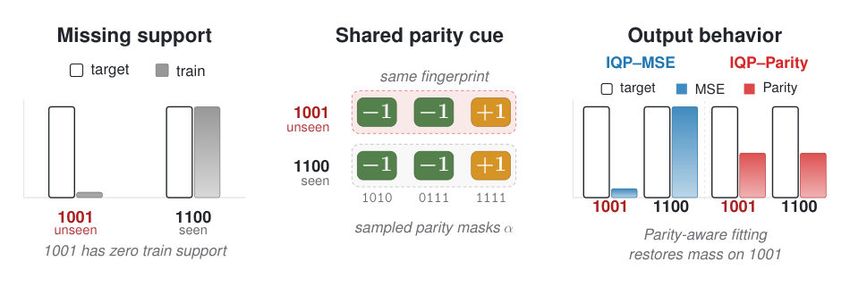
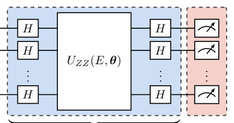
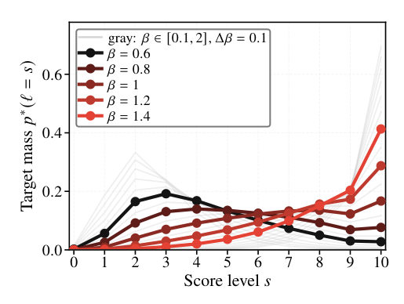
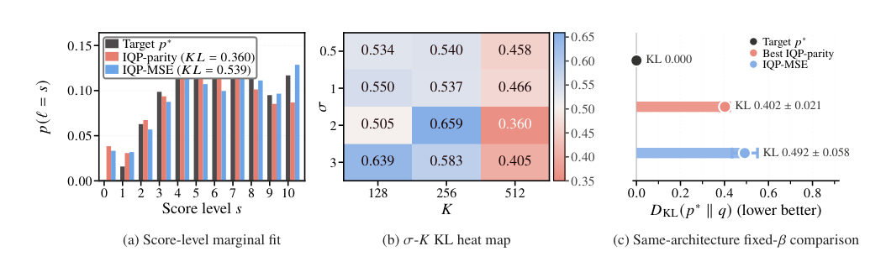
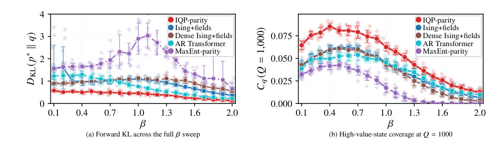
Summary. The paper demonstrates that using parity moments as a training signal for quantum generative models provides a powerful inductive bias for generalization. This mechanism allows the model to correctly assign probability mass to unseen states by leveraging shared statistical fingerprints in the Walsh-Hadamard spectrum.
Why it may be interesting. not directly relevant
Main problem. Investigating whether parity-based supervision in IQP Born machines acts as an inductive bias that drives generalization to unseen states, rather than just being a tool for tractable training.
Main result. Parity supervision improves both forward KL divergence and the recovery of unseen high-value states compared to MSE, acting as a spectral scaffold that the IQP circuit then refines.
Method. A comparative study using a controlled, exactly enumerable benchmark, comparing IQP circuits trained with parity moments against MSE and classical models (Ising, Transformers) using spectral reconstruction diagnostics.
Model / system. Quantum Circuit Born Machines (QCBMs) using an IQP (Instantaneous Quantum Polynomial-time) ansatz with Hadamard layers and a diagonal ZZ-coupling block, tested on both simulations and IBM quantum hardware.
Key observables. Forward Kullback-Leibler (KL) divergence, unseen-state recovery (unseen elite coverage), and Walsh-Hadamard spectral visibility.
Important parameters / regimes. System size (n=10 to 20 qubits), inverse temperature (beta) controlling distribution sharpness, and parity band parameters (K and sigma).
Assumptions / limitations. The study assumes a controlled, parity-aligned synthetic distribution and does not claim general-purpose superiority or practical quantum advantage.
Figures summary. Figure 1 illustrates shared parity cues; Figure 2 shows the IQP ansatz; Figure 3 shows target distribution sharpness; Figure 4 shows KL divergence heatmaps; Figure 5 compares state coverage across beta; Figure 6 shows spectral proxy recovery and hardware robustness; Figure 7 shows KL scaling with system size.
Paper structure. The paper introduces the problem of generalization in generative models, defines the IQP architecture and parity supervision, presents a comparative experimental design (loss vs. architecture), details the spectral reconstruction diagnostics, and concludes with hardware validation and scalability tests.
Generalizing from finite samples to unseen valid states is central to discrete generative modeling. In a controlled, exactly enumerable setting, we test whether parity losses, commonly used for tractable Instantaneous Quantum Polynomial-time (IQP) training, also provide an inductive bias for generalization. We compare an IQP circuit Born machine trained by parity supervision with the same circuit trained by coordinate-wise mean-squared-error (MSE), and with a classical maximum-entropy control given the same parity moments. Parity supervision improves exact forward Kullback-Leibler (KL) fit and unseen high-value-state recovery over IQP-MSE, while the maximum-entropy control does not reproduce the full effect. A parameter-free spectral reconstruction shows that parity moments already transfer evidence from observed samples to structurally compatible unseen states, which the IQP circuit further refines. This identifies parity supervision not only as a tractable training signal, but also as a generalization mechanism for IQP Born machines when the distribution to be learned, the parity objective, and the circuit architecture are structurally aligned.
Authors: Evangelos G. Filothodoros
Type: theory · Category: quantum gases · PDF: https://arxiv.org/pdf/2605.10418v1
Analysis basis: abstract only; PDF text extraction failed or PDF unavailable
Topic relevance: Keldysh / 2PI / non-Gaussian methods 2/5 · analog quantum simulation 2/5
Summary. The paper demonstrates a mathematical mapping between attractive fermions and repulsive bosons using an imaginary chemical potential. It shows that by twisting a thermal phase, one can induce fermion-like behavior in bosonic systems. This provides a new thermodynamic framework for understanding crossovers in lattice models.
Why it may be interesting. It presents a novel mechanism for fermionization that does not rely on the Tonks-Girardeau limit of infinite repulsion or modified statistics, but rather on a thermodynamic effect using an imaginary chemical potential, which could be relevant for engineering effective statistics in many-body systems.
Main problem. The paper investigates a mapping between the attractive Fermi-Hubbard model and the repulsive Bose-Hubbard model under an imaginary chemical potential to understand how fermionization can be induced via thermodynamic effects.
Main result. The authors establish that a shift in the imaginary chemical potential (theta to theta + pi) maps the BCS-BEC crossover of fermions to a Bose-Fermi crossover in bosons, demonstrating that fermion-like behavior can emerge through a thermal phase twist without infinite repulsion.
Method. The study utilizes a large N-expansion and the analytic continuation of a thermal kernel to relate the partition functions of the two models.
Model / system. The study focuses on the attractive Fermi-Hubbard model and the repulsive Bose-Hubbard model at finite temperature and imaginary chemical potential.
Key observables. Partition functions, gap equation, number equation, and the thermal kernel g(betaE, phi).
Important parameters / regimes. Imaginary chemical potential (mu = i*theta), interaction strength, temperature (beta), and the phase parameter (phi).
Assumptions / limitations. The derivation relies on the large N-expansion approximation.
Paper structure. The paper introduces a mapping between Fermi and Bose Hubbard models, presents the large N-expansion derivation of the partition function relation, analyzes the thermal kernel and its analytic continuation, discusses the emergence of fermionization via thermodynamic phase twisting, and concludes with the derivation of the gap and number equations.
We find a mapping between the attractive Fermi-Hubbard model and the repulsive Bose-Hubbard model at finite temperature and at imaginary chemical potential $μ=iθ$. We show, by using a large $N$-expansion, that the partition functions of the two models are related by a simple shift $θ\to θ+ π$. This condition maps the BCS--BEC crossover of attractive fermions to a Bose--Fermi crossover (fermion-like occupation) of repulsive bosons. Central feature of this correspondence plays the thermal kernel $g(βE,φ),$ whose analytic continuation $g_B(βE,φ) = g_F(βE,φ+π)$ governs the bosonic and fermionic sectors. Interestingly, we are able to find that the special angles $φ= 2π/3,4π/3$ for fermions correspond to $φ= π/3,5π/3$ for bosons, marking the boundaries of a universal thermal window. We further argue that the present mechanism shows that fermionization can occur at finite interaction strength through a thermodynamic effect induced by the imaginary chemical potential. This suggests that it is a new way of fermionization (not a change in statistics but a fermion-like behaviour) unlike the Tonks--Girardeau limit, where fermionization arises from an infinite repulsive interaction and anyonic or Floquet-engineered systems where transmutation emerges from modified statistics or dynamics. Essentially, the phase $φ$ is a statistical parameter; by twisting the thermal phase, it generates fermion-like behaviour without hard-core constraints or infinite repulsion but only by using thermodynamics. We derive the gap equation and number equation for the bosonic model, highlighting the role of the imaginary chemical potential as a statistical regulator. Our results provide a unified framework for understanding crossovers in interacting lattice systems.
Authors: Cristiano De Nobili
Type: theory · Category: statistical mechanics · PDF: https://arxiv.org/pdf/2605.10528v1
Analysis basis: abstract only; PDF text extraction failed or PDF unavailable
Topic relevance: non-equilibrium dynamics 2/5 · non-equilibrium universality 2/5
Summary. This paper applies statistical mechanics to study how Large Language Models behave when placed in a multi-agent lattice configuration. It demonstrates that the alignment of these agents is primarily driven by their internal biases rather than social influence from neighbors. The work provides a quantitative way to fingerprint the collective behavior and reliability of AI agent populations.
Why it may be interesting. not directly relevant
Main problem. The paper aims to disentangle social conformity (cooperative coupling) from intrinsic bias in LLM-based multi-agent systems and to characterize their collective phase-transition-like behavior.
Main result. The study finds that collective alignment in LLMs is driven by intrinsic bias rather than neighbor coupling, resulting in field-driven crossovers instead of true phase transitions, with critical exponents that deviate from the 2D Ising universality class.
Method. A model-agnostic statistical physics framework is applied to an L x L lattice of LLM agents, using finite-size scaling and a global-flip protocol to measure magnetization and susceptibility.
Model / system. A 2D square lattice where each node hosts an identical LLM agent (Llama 3.1, Phi-4 mini, or Mistral) holding a binary state (+1/-1) that updates based on the states of its four nearest neighbors.
Key observables. Magnetization, susceptibility, effective beta-weighted couplings J(T), and effective fields h(T).
Important parameters / regimes. Sampler temperature (T) as the control parameter, lattice size (L), and the ratio of coupling to field (J/h).
Assumptions / limitations. The agents are assumed to be identical and the interaction is limited to the four nearest neighbors on a square lattice.
Paper structure. The paper introduces a statistical physics framework for multi-agent systems, describes the lattice-based LLM model, presents results on magnetization and susceptibility across different models, performs finite-size scaling analysis, and concludes with the extraction of effective coupling and field parameters.
We investigate the emergent collective dynamics of LLM-based multi-agent systems on a 2D square lattice and present a model-agnostic statistical-physics method to disentangle social conformity from intrinsic bias, compute critical exponents, and probe the collective behavior and possible phase transitions of multi-agent systems. In our framework, each node of an $L\!\times\!L$ lattice hosts an identical LLM agent holding a binary state ($+1$/$-1$, mapped to yes/no) and updating it by querying the model conditioned on the four nearest-neighbor states. The sampler temperature $T$ serves as the sole control parameter. Across three open-weight models (llama3.1:8b, phi4-mini:3.8b, mistral:7b), we measure magnetization and susceptibility under a global-flip protocol designed to probe $\mathbb{Z}_2$ symmetry. All models display temperature-driven order-disorder crossovers and susceptibility peaks; finite-size scaling on even-$L$ lattices yields effective exponents $γ/ν$ whose values are model-dependent, close to but incompatible with the 2D Ising universality class ($γ/ν=7/4$). Our method enables the extraction of effective $β$-weighted couplings $\tilde{J}(T)$ and fields $\tilde{h}(T)$, which serve as a measure of social conformity and intrinsic bias. In the models we analyzed, we found that collective alignment is dominated by an intrinsic bias ($\tilde{h}\gg\tilde{J}$) rather than by cooperative neighbor coupling, producing field-driven crossovers instead of genuine phase transitions. These effective parameters vary qualitatively across models, providing compact collective-behavior fingerprints for LLM agents and a quantitative diagnostic for the reliability of multi-agent consensus and collective alignment.
Authors: Noe Blassel, Louis Carillo, Shiva Darshan, Raphael Gastaldello, Alessandra Iacobucci, Elisa Marini, Regis Santet, Xiaocheng Shang, Gabriel Stoltz, Urbain Vaes
Type: theory · Category: numerical methods · PDF: https://arxiv.org/pdf/2605.10507v1
Analysis basis: abstract only; PDF text extraction failed or PDF unavailable
Topic relevance: methods for driven-dissipative 2/5 · non-equilibrium dynamics 2/5
Summary. This paper reviews the primary numerical strategies used to calculate transport coefficients in molecular dynamics. It provides a mathematical analysis of error estimation for different methods and explores modern variance reduction techniques to improve computational efficiency.
Why it may be interesting. not directly relevant
Main problem. The paper addresses the challenges and errors associated with computing transport coefficients in molecular dynamics simulations.
Main result. The authors provide a comprehensive review and numerical analysis of three main classes of methods for computing transport coefficients, including error quantification and variance reduction techniques.
Method. The review covers nonequilibrium methods (external driving), equilibrium methods (Green-Kubo and Einstein formulas), and transient techniques, while also discussing variance reduction like importance sampling and control variates.
Model / system. The paper focuses on molecular dynamics simulations and the computation of transport coefficients within these classical or semi-classical frameworks.
Key observables. Transport coefficients (e.g., diffusion, viscosity, conductivity) and time correlation functions.
Paper structure. The paper is structured as a review, classifying numerical approaches into three groups (nonequilibrium, equilibrium, and transient) and then providing numerical analysis and variance reduction strategies for each.
We review various numerical approaches to compute transport coefficients in molecular dynamics. These approaches can be broadly classified into three groups: (i) nonequilibrium methods based on applying an external driving field to the system, measuring the average response in the system, and evaluating the related linear response coefficient; (ii) approaches reformulating the transport coefficient of interest through a time correlation function for the equilibrium dynamics (the most popular instances being Green--Kubo and Einstein formulas); (iii) transient techniques, where the transport coefficient can be computed by monitoring the return to the steady state of a dynamics perturbed off its stationary distribution. For all three classes of methods, we provide elements of numerical analysis, allowing to estimate or at least quantify the level of numerical errors in the estimator of the transport coefficient; and also briefly present recent attempts to more efficiently compute transport coefficients with variance reduction approaches such as control variates, importance sampling and coupling methods. The computation of transport coefficients remains nonetheless challenging and will continue requiring research efforts in the foreseeable future.
← Index · ← Previous · Next →